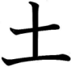
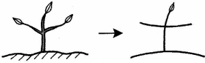
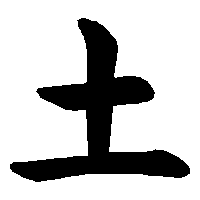
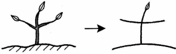
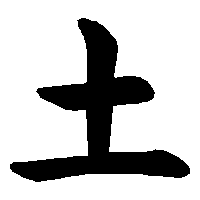

THỔ - Đất
- kanji :
- 土
- Âm Hán Việt:
- THỔ
- On
- ど、と
- Kun:
- つち
|  | Mầm chồi thì mọc ra từ đất A bud sprouts out from the soil. 土つちから芽めが出でました。 |
|
| On: ど、と | Kun: つち | |
|

|
|
|  | Mầm chồi thì mọc ra từ đất A bud sprouts out from the soil. 土つちから芽めが出でました。 |
|
| On: ど、と | Kun: つち | |
|

|
|